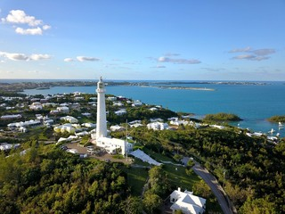
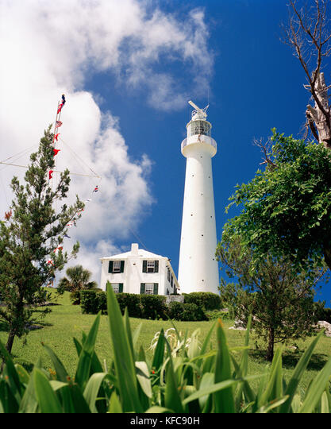
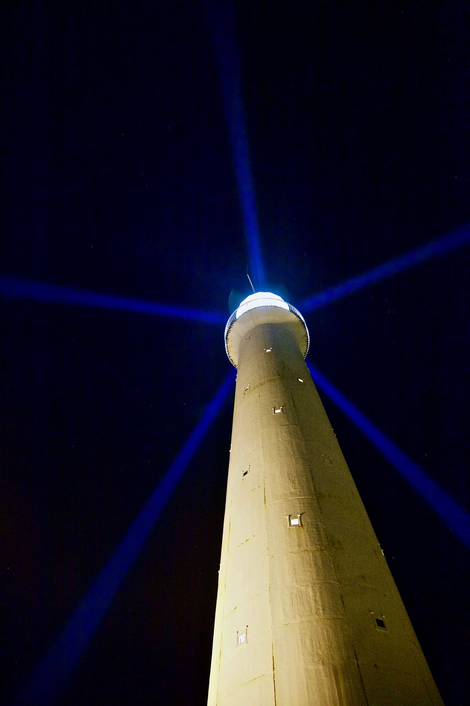

Island Views
For an even better view than the one enjoyed by Queen Elizabeth II when she visited but did not climb the lighthouse in 1953, hike the 185 spiral steps to the top. Built in 1846, it's the oldest cast-iron lighthouse in the world. From the top, you can relish what islanders consider the single finest view in all of Bermuda -- a panorama of the island and its shorelines. In heavy winds, the tower actually sways, so be sure to hang on to the railing when you're up there.
Daytime Views
Sunshine, blue skies, and mild temperatures define Bermuda weather and feed into its island allure. But it’s always good to know about seasonal differences and typical weather possibilities – for example, umbrellas can be going up for brief showers in the West End while people in the East End are basking in sunshine.
Night Views
Some say that Bermuda has great conditions for stargazing, and you can use an online star map to find constellations, planets, and other celestial objects. You can also use TheSkyLive.com's Online Sky Map and Planetarium to filter by visibility for naked eye, binoculars, small telescope, large telescope, or professional telescope.